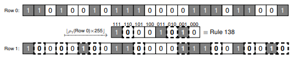

Document
Paper here!
Notes
My own notes
A brief summary
-
Abstract
- Cellular Automata(CA) is useful for exploring how simple rules and spatial memory creates complex patterns
- Conventional CA lacks state feedback. However, in natural evolution, we observe such property.
- In this study, a state-dependent feedback mechanism is implemented on CA.
- Unlike conventional CA, which have an initial condition and a static ruleset; these CA's rules are extracted from the last generation.
- At the end of simulations, it is seen that these automata contain disconnected regions that are like conventional CA.
-
Introduction
-
There is another kind of evolutionary computation on CA, called EvCA(Evolving cellular automata).
TODO: LOOK UP TO EvCA.
- In EvCA, there is no feedback in the fitness channel. Evolution does not change the fitness function, so evolution goes to a singular target.
- In life, evolving creatures create a history and changes the environment. Thus, a generation affects the next one.
- In order to fill the hole in EvCA, PICARD is introduced.(PICARD = PICARD Implements CA Rules Differently)
- Like any CA, PICARD also implements a rule for moving one generation to another. However, this rule is not static and externally specified, but derived from current state of CA.
- Since a PICARD behaves differently for different initial conditions, it could behave like any other CA for different initial conditions.
-
Cellular Automata with PICARD Mappings
- Although PICARD implements CA rules differently, the same rule is iterated in the same way.
- Difference of a PICARD wrt CA is , there is no static rule in PICARD. Instead, a mapping is done to a row to its rule to be operated on.
-
Some example aggregation PICARD mappings:
-
Sum of ones: Total number of 1s are implemented as the rule. Since there are 24 cells used, 25 rules in total can appear in range of 0-24.
-
Density of ones: (Total number of 1s/Total number of cells)*255. Also here, 25 rules in total can be generated in range of 0-255.

-
Some examples of block PICARD mappings:
-
Block ones majority: If a 3-block has majority of 1's, the rule bit corresponding to it is 1. All 255 rules are reachable.
-
Block ones odd parity: If a 3-block has odd numbers of 1's, the rule bit corresponding to it is 1. All 255 rules are reachable.
-
Block transition odd parity: If a 3-block has odd number of transitions, the rule bit corresponding to it is 1. All 255 rules are reachable.
-
An example of permutational PICARD mapping:
-
Block transition odd parity with mid-nybble-switch: Same as Block transition odd parity, but bit 1 switches with 2, bit 5 switches with 1.
-
A PICARD Case Study
-
With different starters, lots of simulations performed. Mapping used here is block transition odd parity with mid-nybble-switch. Here are some patterns observed:
-
Mutual oscillation
-
Mutual fixed points
-
Oscillating microstate with fixed rule
-
Short transition
-
A long transient that ends up with rule 0.